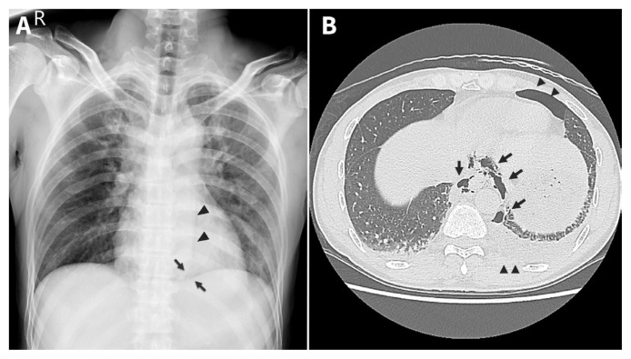
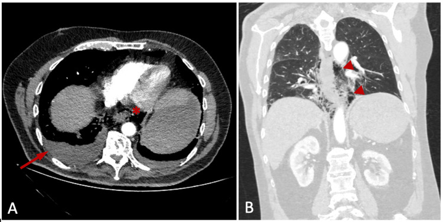
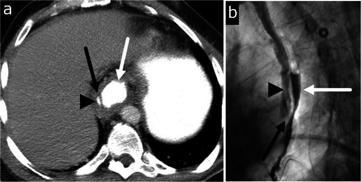
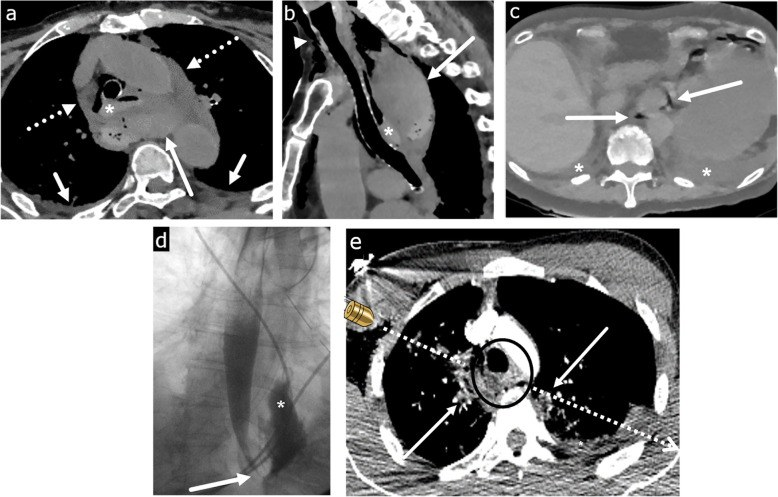
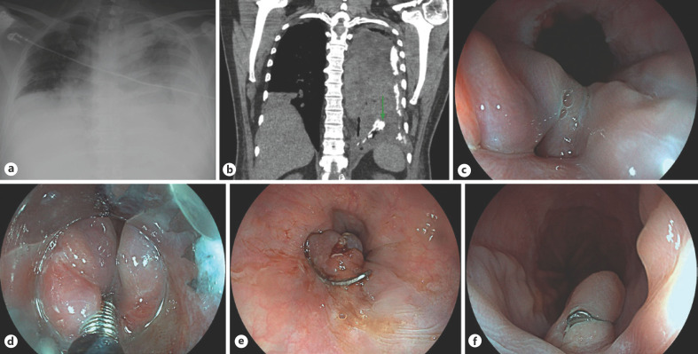

1869 — Vỡ thực quản tự phát (Boerhaave syndrome)
Tags: pattern:khi-trung-that pattern:ro-thuc-quan pattern:tran-dich-mang-phoi vung:trung-that vung:thuc-quan vung:mang-phoi protocol:CT-nguc-cang-quang protocol:can-quang-thuc-quan protocol:noi-soi-thuc-quan score:Pittsburgh
Mức chắc chắn (certainty): tổng hợp y văn (literature synthesis) — dựa trên 1 tổng quan tự sự 2025 (PMC12524210, CC BY), 1 loạt 21 ca trung tâm tuyến ba (PMC11933238, CC BY), 1 tổng quan kỹ thuật xâm lấn tối thiểu 48 ca (PMID 32944354), 1 tổng quan hệ thống 2024 (PMID 39092389), và 4 ca nguyên văn có ảnh (PMC10928871, PMC8486476, PMC10666923, PMC7547061). Không có thử nghiệm ngẫu nhiên; mọi ngưỡng xử trí là dữ liệu hồi cứu/đồng thuận.
Câu chốt: vỡ thực quản tự phát là cấp cứu trung thất do áp lực, không phải "đau ngực do nôn". Ba số phải thuộc: 3,1 ca/1 triệu người/năm, chiếm tới 15% cấp cứu thực quản; 90% rách ở thành trái đoạn dưới, dài trung bình 2,2–3,3 cm; tử vong 30–90% khi muộn nhưng chỉ 6,2% khi chẩn đoán trong 24 giờ đầu. Chìa khóa hình ảnh: CT ngực có cản quang uống, độ nhạy 92–100% — không chờ "tam chứng Mackler" vì tam chứng đầy đủ gặp < 15%.
1. Tổng quan bệnh học – cơ chế hình ảnh (TẠI SAO)
1.1 Cơ chế "ống kín": áp lực trong lòng vượt sức chịu của thành sau–trái
- Nôn dữ dội tạo tình huống ống kín: cơ nhẫn hầu và cơ hoành cùng co, không mở kịp → áp lực trong lòng thực quản vọt lên ~200 mmHg (thực nghiệm trên thực quản tươi; tương đương cơn co thắt "nutcracker") trong vài giây.
- Thành sau–trái đoạn 1/3 dưới là điểm yếu nhất vì: (a) lớp cơ dọc mỏng hơn, (b) có lỗ xuyên của mạch–thần kinh, (c) không có mô tạng đỡ phía sau, (d) thực quản gập góc khi qua trụ hoành trái. Vì vậy ~90% vỡ ở thành trái đoạn dưới, sát tâm vị; vết rách toàn thành, dài trung bình 2,2–3,3 cm (khoảng 1–8 cm).
- Khác biệt cốt lõi với hội chứng Mallory–Weiss: Mallory–Weiss chỉ rách niêm mạc ở tâm vị, không thủng thành, nên không có khí/dịch trung thất và không gây viêm trung thất; Boerhaave là rách toàn thành → khoang trung thất tiếp xúc trực tiếp với vi khuẩn và dịch tiêu hóa.
1.2 TẠI SAO khí và dịch đi vào trung thất — rồi vào màng phổi
- Trong thì nôn, áp lực trong lòng thực quản dương trong khi áp lực lồng ngực âm → chênh áp > 100 mmHg đẩy khí + dịch tiêu hóa qua lỗ rách vào trung thất sau chỉ trong vài giây.
- Khí lan theo hiệu ứng Macklin: khí thoát từ đường thở/thực quản đi dọc vỏ bọc mạch–phế quản (bronchovascular bundle) vào trung thất, rồi lên cổ (khí dưới da) và xuống sau phúc mạc. Đây là lý do khí trung thất đơn thuần không đặc hiệu — cùng cơ chế gặp trong hen, ho mạnh, thở máy.
- Dịch tiêu hóa gây viêm trung thất hóa học + nhiễm khuẩn đa loài (liên cầu viridans, Klebsiella, E. coli, S. aureus): sốt, đau ngực, nhiễm khuẩn huyết thường trong 24–48 giờ. Màng phổi trái bị nhiễm vì thực quản đoạn dưới áp sát màng phổi trái → tràn dịch/tràn khí màng phổi trái là dấu gián tiếp kinh điển; tràn phải cũng gặp (nhất là khi rách lan sang phải hoặc qua trung thất).
- Vật lý hình ảnh: khí −1.000 HU (đen tuyệt đối), dịch 0–20 HU, cản quang uống 100–300 HU. Vì vậy trên CT, giọt cản quang ngoài lòng thực quản là bằng chứng trực tiếp của lỗ thủng, còn khí + dịch + đám thâm nhiễm mỡ trung thất là bằng chứng gián tiếp. X-quang chỉ thấy khí khi đã đủ lớn để tạo dải khí sau tim hoặc liềm khí dưới da — đó là lý do X-quang âm tính không loại trừ.
1.3 Ngưỡng định lượng trụ cột
| Biến số | Số liệu | Nguồn |
|---|---|---|
| Tần suất | 3,1 ca/1 triệu người/năm; tới 15% cấp cứu thực quản | PMC12524210; PMC13221768 |
| Giới / tuổi | Nam:nữ 2:1–5:1; đỉnh thập niên 6–7 | PMC12524210 |
| Vị trí | 90% thành trái đoạn dưới; 96% tổn thương ở thực quản xa (loạt phẫu thuật nội soi) | PMC12524210; PMID 32944354 |
| Kích thước rách | trung bình 2,2–3,3 cm (1–8 cm) | PMC12524210 |
| Tử vong chung | 30–90% tùy nguồn; > 50% nếu chẩn đoán muộn > 24 giờ | PMC12524210; PMC13221768 |
| Tử vong khi chẩn đoán sớm | 6,2% nếu can thiệp trong 24 giờ; sống ~75% | PMC12524210 |
| Khí dưới da | có ở ~60% ca | PMC13221768 |
| Tam chứng Mackler đầy đủ | < 15% ca | PMC13221768 |
| Dấu Naclerio chữ V trên X-quang | ~20% ca | PMC12524210 |
| CT ngực có cản quang uống | độ nhạy 92–100% | PMC12524210 |
| Cản quang uống (X-quang) | bỏ sót 22–50% với thuốc tan trong nước; 10–20% với barium | PMC12524210 |
| Loạt 21 ca tuyến ba | 62% chẩn đoán < 24 giờ; tử vong 90 ngày 14% (muộn 38% vs sớm 0%, p = 0,042); nằm viện trung vị 32 ngày | PMC11933238 |
| Loạt nội soi lồng ngực hỗ trợ | tử vong 8,3%, biến chứng 64,5% (viêm phổi 42%, mủ màng phổi 26%, rò 19%) | PMID 32944354 |
| Điểm Pittsburgh (PSS) | tử vong 3,2% (PSS ≤ 2), 7% (PSS 3–5), 37,5% (PSS ≥ 5) | PMC12524210 |

(A) X-quang ngực: dải khí viền bờ trung thất trái dưới, tạo hình chữ V (mũi tên), kèm các vệt khí cạnh động mạch chủ xuống trên cơ hoành trái (đầu mũi tên) — dấu Naclerio. (B) CT ngực: khí trung thất lan quanh thực quản và động mạch chủ (mũi tên), tràn khí màng phổi hai bên (đầu mũi tên). Nguồn: Chew FY, Yang ST; CMAJ 2021; Fig. 1 — PMC8486476, CC BY-NC-ND (nguyên bản, không crop).2. Mẫu hình + chẩn đoán phân biệt theo vị trí (Gamut)
- Khí trung thất sau (posterior mediastinum): Boerhaave · thủng thực quản do nội soi/đặt stent/dị vật · rò thực quản do xạ hoặc u · thủng khí quản–phế quản · khí trung thất tự phát (hen, ho, thở máy — hiệu ứng Macklin) · viêm trung thất sinh khí do vi khuẩn.
- Tràn dịch/tràn khí màng phổi trái sau nôn: Boerhaave (kinh điển) · áp-xe phổi vỡ · thủng dạ dày–thực quản · tràn khí do thở máy · hội chứng Mallory–Weiss (chỉ thiếu máu, không khí trung thất).
- Đau ngực + sốc sau nôn: Boerhaave · nhồi máu cơ tim · bóc tách động mạch chủ · thuyên tắc phổi · viêm tụy cấp · thủng ổ loét dạ dày–tá tràng.
- Khí trong trung thất nhưng không có dịch/không nhiễm trùng: khí trung thất tự phát lành tính — không đau kiểu xé, không sốt, không tràn dịch; điều trị hỗ trợ.
- Gợi nhớ VOMIT: Vomiting (nôn) · Oesophageal leak (rò thực quản) · Mediastinitis (viêm trung thất) · Intubated/iatrogenic (can thiệp) · Thoracic pain (đau ngực). Nhưng quan trọng hơn mnemonic: bối cảnh nôn dữ dội + đau ngực đột ngột = phải loại trừ Boerhaave bằng CT có cản quang uống, không dựa vào tam chứng.
3. Bảng so sánh phân biệt (ma trận đối chiếu)
| Thực thể (entity) | Hình ảnh điển hình | Chốt vào (rule-in) | Chốt loại (rule-out) | Gợi ý xác nhận |
|---|---|---|---|---|
| Boerhaave (vỡ tự phát) | Khí trung thất sau + tràn dịch/tràn khí màng phổi trái; CT có cản quang thoát ra ngoài lòng ở thực quản dưới; thành thực quản dày, ổ dịch cạnh thực quản | Nôn dữ dội → đau ngực đột ngột + khí trung thất + cản quang thoát ra ở đoạn dưới | Không có cản quang thoát ra, không dịch trung thất, khí khu trú trước trung thất → nghĩ khí tự phát | CT ngực có cản quang uống (độ nhạy 92–100%); nội soi khi cần |
| Thủng do can thiệp (iatrogenic) | Tổn thương đúng vị trí dụng cụ (nội soi, TEE, nong, stent); khí + máu tụ trung thất, có thể không tràn dịch sớm | Tiền sử thủ tục trong 24 giờ + khí/dịch tại chỗ can thiệp | Không can thiệp, rách thành trái đoạn dưới sau nôn → nghĩ Boerhaave | CT + nội soi; so kế hoạch thủ thuật |
| Mallory–Weiss | Rách niêm mạc ở tâm vị; không khí trung thất, không dịch trung thất; nội soi thấy vết rách dọc | Nôn ra máu + không khí trung thất + nội soi thấy rách niêm mạc | Có khí trung thất/dịch trung thất → không phải Mallory–Weiss đơn thuần | Nội soi tiêu hóa trên |
| Bóc tách nội thành thực quản (intramural dissection) | CT: vạt nội thành (flap) giữa lòng thật và lòng giả; cản quang barium cho hai lòng song song; không có khí/dịch trung thất tự do | Vạt nội thành rõ + hai lòng + không thoát cản quang ra ngoài | Cản quang thoát tự do ra trung thất → thủng toàn thành | CT lát mỏng + barium (nếu CT chưa rõ) |
| Khí trung thất tự phát (Macklin) | Khí khu trú trước trung thất/dọc phế quản, không dịch màng phổi, không ổ dịch trung thất; bệnh nhân tỉnh, không sốt | Khí trung thất + không dịch + không nhiễm trùng + bối cảnh hen/ho/thở máy | Có dịch/ổ khí–dịch cạnh thực quản, sốt → nghĩ thủng | CT không cản quang uống; theo dõi 24–48 giờ |
| Thủng do u hoặc rò do xạ | Khối u/hẹp lan tỏa trong trường xạ; rò ở bờ u hoặc vùng chiếu; hạch hoại tử | Khối u rõ/hẹp + tiền sử xạ + rò tại chỗ | Thành trái đoạn dưới, không khối, sau nôn → Boerhaave | CT + nội soi + sinh thiết |
| Nhồi máu cơ tim / bóc tách ĐMC | Không khí trung thất; ĐMC có vạt nội mạc, tràn dịch màng tim; ECG ST chênh | Vạt nội mạc/ST chênh + không khí trung thất | Khí trung thất + cản quang thoát ra → loại | ECG, troponin, CTA |

(A) Lát trục cửa sổ trung thất: khí tự do trong trung thất (mũi tên đỏ nhỏ) và tràn dịch màng phổi hai bên, nhiều bên trái (mũi tên đỏ dài). (B) Lát trục: khí lan theo trục dọc quanh thực quản và động mạch chủ (đầu mũi tên). Nguồn: Totsi A, Fortounis K, Michailidou S, Balasas N, Papavasiliou C; Cureus 2023; Fig. 1 — PMC10666923, CC BY.4. Protocol chụp + hệ phân độ/ngưỡng xử trí
4.1 Thứ tự chẩn đoán (quan trọng hơn thông số)
- X-quang ngực thẳng + nghiêng tại giường (không chờ): tìm tràn dịch/tràn khí màng phổi, khí trung thất, dấu Naclerio chữ V, khí dưới da cổ. X-quang âm tính không loại trừ.
- CT ngực có cản quang tĩnh mạch + uống cản quang tan trong nước, lát 1–1,5 mm, cửa sổ trung thất + phổi: đây là chuẩn vàng (độ nhạy 92–100%). Đọc 4 điểm: (a) cản quang ngoài lòng thực quản; (b) khí/ổ khí–dịch trung thất sau; (c) dày thành thực quản, mất liên tục thành; (d) tràn dịch/tràn khí màng phổi, đông đặc phổi.
- Cản quang thực quản bằng thuốc tan trong nước nếu CT chưa rõ và bệnh nhân ổn định: chứng minh đường rò, đánh giá chiều dài/lưu lượng. Không dùng barium đầu tiên (viêm trung thất hóa học); nếu vẫn nghi và cản quang nước âm tính, có thể lặp bằng barium vì bỏ sót 22–50% với thuốc nước.
- Nội soi thực quản khi cần xác định vị trí/kích thước để đặt stent/clip hoặc loại trừ u — bơm hơi tối thiểu, ưu tiên CO₂, vì bơm mạnh làm rò to và tăng tràn khí trung thất.
- CTA ngực nếu có ho ra máu/herald bleed hoặc tổn thương sát động mạch chủ (loại trừ rò thực quản–động mạch chủ).
4.2 Điểm Pittsburgh (Pittsburgh Perforation Severity Score, PSS) — 2009, tối đa 18 điểm
- 10 biến số, mỗi biến 1–3 điểm: tuổi, nhịp tim, số lượng bạch cầu, tràn dịch màng phổi, sốt, tụt huyết áp, rò thực quản không kiểm soát, thời gian từ lúc thủng, suy hô hấp, ung thư kèm theo.
- Ngưỡng tiên lượng (Schweigert): PSS ≤ 2 → tử vong 3,2%; 3–5 → 7%; ≥ 5 → 37,5%. PSS dùng để chọn đường điều trị, không thay thế đánh giá lâm sàng.
4.3 Nguyên tắc xử trí theo thời gian và mức nhiễm trùng
- < 24 giờ, ổn định, rách nhỏ, không nhiễm trùng trung thất nặng: có thể điều trị bảo tồn có chọn lọc (nhịn ăn, kháng sinh phổ rộng, dẫn lưu màng phổi/trung thất, nuôi ăn qua sonde hoặc mở dạ dày) — nhưng phải theo dõi sát 24–48 giờ, và không áp dụng cho rách lớn, nhiễm trùng, rò không kiểm soát.
- Rách lớn, nhiễm trùng trung thất, PSS cao: mổ — vá nguyên phát có/không gia cố (mạc nối, màng phổi), dẫn lưu trung thất + hai khoang màng phổi, mở dạ dày/jejunostomy nuôi ăn; VATS là lựa chọn ở trung tâm có kinh nghiệm (75% ca trong tổng quan; tử vong 8,3%, nhưng biến chứng 64,5%).
- Điều trị nội soi: stent toàn phần có màng (fully covered SEMS), clip qua nội soi (OTSC), liệu pháp hút chân không nội soi (EVT) — thay băng 3–4 ngày/lần; hợp nhất cho rách < 2 cm, không nhiễm trùng trung thất lan rộng. Stent có biến chứng 37% (rò 16%, di trú 16%, chảy máu 5%) trong loạt 21 ca.
- Luôn phối hợp: kháng sinh phổ rộng (Gram âm + kỵ khí), kiểm soát đau, hồi sức, nuôi ăn sớm bằng đường tiêu hóa nếu có thể (giảm nhiễm trùng và thời gian nằm viện).
flowchart TD
A[Nôn dữ dội rồi đau ngực đột ngột] --> B[X-quang ngực + CT có cản quang uống]
B --> C{Cản quang thoát ra ngoài lòng hoặc khí-dịch trung thất?}
C -->|Có| D[Boerhaave - cấp cứu]
C -->|Không, nhưng lâm sàng mạnh| E[Lặp CT hoặc cản quang nước, nội soi]
C -->|Không và không có dịch trung thất| F[Khí trung thất tự phát - theo dõi]
D --> G[Tính PSS + hội chẩn ngoại/tiêu hóa/hồi sức]
G --> H{PSS <= 2 và rách nhỏ, < 24 giờ?}
H -->|Có| I[Bảo tồn chọn lọc: kháng sinh, dẫn lưu, nuôi ăn]
H -->|Không| J[Mổ vá nguyên phát hoặc VATS + dẫn lưu]
J --> K[Stent/clip/EVT nếu rách < 2 cm và không nhiễm trùng lan rộng]
I --> L[Theo dõi 24-48 giờ, CT/cản quang kiểm tra]
K --> L
5. Biến thể bình thường và cạm bẫy
- Khí trong thực quản là bình thường khi bệnh nhân nuốt khí (aerophagia), sau nội soi, hoặc ở người thở máy; chỉ có giá trị khi khí nằm ngoài lòng, trong trung thất, kèm dịch/ổ khí–dịch.
- X-quang ngực bình thường không loại trừ: dấu Naclerio chỉ có ~20%; khí dưới da xuất hiện muộn (cần thời gian lan lên cổ) và chỉ ~60%.
- Tam chứng Mackler đầy đủ < 15% → chờ đủ tam chứng là chờ tử vong. Bệnh nhân lớn tuổi, đái tháo đường, nghiện rượu có thể không sốt, không đau dữ dội ("biểu hiện mờ").
- Bẫy "satisfaction of search": thấy tràn dịch màng phổi trái rồi dừng ở "viêm phổi/tràn dịch" — bỏ sót khí trung thất và lỗ rách. Luôn đọc cửa sổ trung thất và truy vết thực quản trên mọi CT ngực có tràn dịch không giải thích.
- Bóc tách nội thành thực quản (ảnh dưới) là bắt chước khó: bệnh nhân đau ngực sau nôn, CT thấy vạt nội thành + hai lòng, nhưng không có cản quang thoát tự do — điều trị khác (nhịn ăn, kháng sinh, theo dõi), không mổ như thủng toàn thành.
- Thủng do can thiệp (ảnh dưới): khí + máu tụ trung thất tại chỗ dụng cụ, có thể không tràn dịch sớm; tiền sử thủ thuật là chốt định hướng, nhưng vẫn phải chứng minh bằng cản quang thoát ra.
- Đừng bỏ sót rò thực quản–động mạch chủ: herald bleed (nôn ra máu nhỏ) rồi chảy máu ồ ạt; CTA là bắt buộc trước khi nội soi thường quy.
- Barium đầu tiên khi nghi thủng là sai lầm: gây viêm trung thất hóa học, khó rửa; luôn bắt đầu bằng thuốc tan trong nước.

(a) CT trục: vạt nội thành (mũi tên) giữa lòng thật (đầu mũi tên) và lòng giả (mũi tên trắng) ở thực quản dưới. (b) Barium: hai lòng song song với khuyết vạt (mũi tên đen) — dấu "double barrel". Đây là bóc tách nội thành, không phải thủng toàn thành. Nguồn: Masarapu V, Xia E, Son H; Insights Imaging 2020; Fig. 9 — PMC7547061, CC BY.
(a) CT trục và (b) CT đứng dọc: thực quản trên giãn, chứa máu (dấu hoa thị), liền với khối máu tụ sau có nhiều ổ khí (mũi tên dài); tràn khí–máu trung thất lan rộng (mũi tên đứt). Bối cảnh: nữ 80 tuổi đau ngực sau siêu âm tim qua thực quản. Nguồn: Masarapu V, Xia E, Son H; Insights Imaging 2020; Fig. 2 — PMC7547061, CC BY.6. Tự lượng giá — Blind Quiz
Ca 1 — Nam trung niên, nôn dữ dội rồi đau ngực–bụng trên, sốt, khó thở. X-quang và CT dưới đây.

- Câu hỏi: (1) X-quang (a) cho thấy gì? (2) CT (b) chứng minh điều gì bằng cản quang uống? (3) Nội soi (c–f) cho thấy gì và xử trí ra sao?
Bấm để hiện đáp án (findings + chẩn đoán)
- Findings: (a) tràn khí–dịch màng phổi trái hoàn toàn, trung thất bị đẩy sang phải; (b) CT cổ–ngực: cản quang uống thoát ra ngoài lòng thực quản dưới (mũi tên), khí trung thất, tràn dịch hai bên; (c–f) nội soi: lỗ thủng thành bên thực quản dưới, bờ niêm mạc rách, sau đó đặt clip qua nội soi (OTSC) đóng kín.
- Chẩn đoán: Boerhaave — vỡ toàn thành thực quản dưới sau nôn; xử trí: hồi sức, kháng sinh, dẫn lưu màng phổi, đóng lỗ thủng bằng OTSC (hoặc stent có màng) khi rách nhỏ và không nhiễm trùng lan rộng.
- Vì sao: cản quang thoát ra ngoài lòng là bằng chứng trực tiếp; khí trung thất + tràn dịch trái là dấu gián tiếp. Nguồn ảnh: Estorninho J, Pimentel R, Gravito-Soares M, Gravito-Soares E, Amaro P, Figueiredo P; GE Port J Gastroenterol 2023; Fig. 1 — PMC10928871, CC BY-NC.
Ca 2 — Nữ 80 tuổi, đau ngực sau siêu âm tim qua thực quản (TEE). CT ngực dưới đây.
- Câu hỏi: (1) Bất thường chính ở trung thất sau? (2) Vì sao đây là thủng do can thiệp chứ không phải Boerhaave? (3) Cần làm gì tiếp?
Bấm để hiện đáp án
- Findings: thực quản trên giãn, chứa máu; khối máu tụ sau thực quản có nhiều ổ khí; tràn khí–máu trung thất lan rộng; tràn dịch màng phổi hai bên ít.
- Chẩn đoán: thủng thực quản do can thiệp (iatrogenic) sau TEE — vị trí đúng nơi đặt đầu dò, có máu tụ (do tổn thương mạch nhỏ) nhiều hơn dịch tiêu hóa.
- Xử trí: hội chẩn ngoại/tiêu hóa ngay, kháng sinh phổ rộng, dẫn lưu trung thất/màng phổi; nội soi đánh giá lỗ thủng, cân nhắc stent/clip hoặc mổ. Không chờ đủ tam chứng.
- Nguồn ảnh: Masarapu V, Xia E, Son H; Insights Imaging 2020; Fig. 2 — PMC7547061, CC BY.
Ca 3 — Nam 51 tuổi, đau ngực lan ra lưng sau nôn mạnh. CT và barium dưới đây.
- Câu hỏi: (1) Dấu hiệu trên CT (a)? (2) Barium (b) xác nhận gì? (3) Chẩn đoán và thái độ điều trị khác Boerhaave ở đâu?
Bấm để hiện đáp án
- Findings: (a) vạt nội thành giữa lòng thật và lòng giả ở thực quản dưới; (b) barium cho hai lòng song song với khuyết vạt — dấu "double barrel"; không có cản quang thoát tự do ra trung thất.
- Chẩn đoán: bóc tách nội thành thực quản (esophageal intramural dissection) — tổn thương nội thành, không thủng toàn thành. Điều trị: nhịn ăn, kháng sinh, giảm đau, theo dõi; can thiệp chỉ khi thủng/thắt hẹp — không mổ như Boerhaave.
- Nguồn ảnh: Masarapu V, Xia E, Son H; Insights Imaging 2020; Fig. 9 — PMC7547061, CC BY.
Bài liên quan chéo
- 061 – Tràn khí trung thất (khí trung thất đơn thuần và hiệu ứng Macklin)
- 1844 – Rò và hoại tử thực quản do xạ (rò thực quản không do nôn; ngưỡng liều xạ)
- 040 – Tràn dịch màng phổi (phân biệt dịch màng phổi – cổ trướng, dấu crus lệch)
- 649 – Khí trung thất hoại tử và sinh khí ở trẻ (bối cảnh nhi khoa)
Không dùng để chẩn đoán độc lập khi chưa có người hướng dẫn.